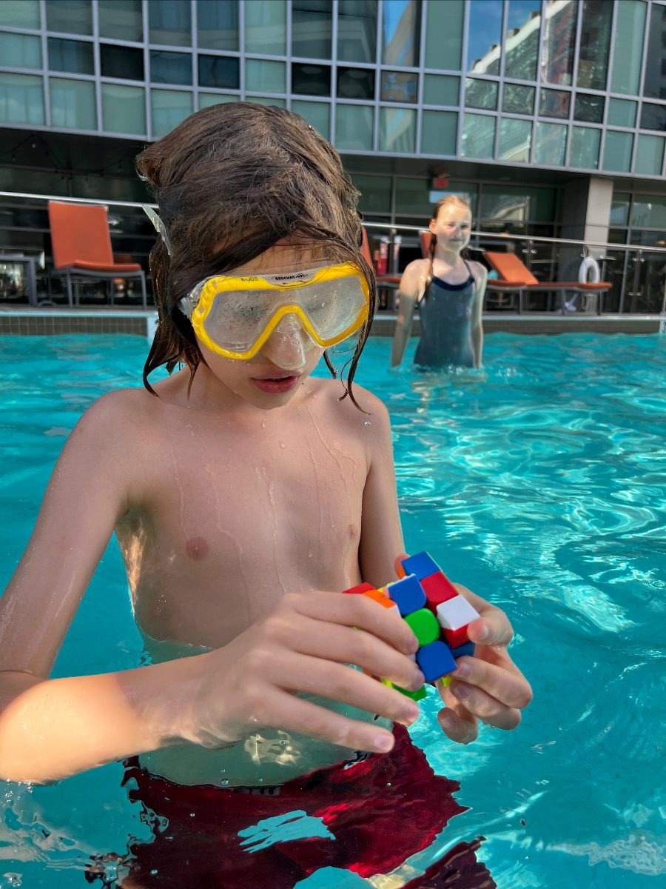

News & Events
Behind the Scenes at AHEM: Jeff Sullivan
Jeff Sullivan lives in Dedham with his family (including three children). Read more >>
Homeschooling Teens: The World Is Your Oyster
Homeschooling high school is great preparation for life after homeschooling, helping to hone dreams and skills to attain what you want. You get to live your life now, not just “prepare” for the future. It allows for:
- Time and space to explore and delve into interests
- Real world experience
- Self-paced study (faster or slower)
- Flexible scheduling
What about socializing?
The norm in our culture is school, which means having a set group of peers with whom you spend all day, every day. In the real world, that’s not how people meet and make friends. They do meet people and make friends though, in various settings. Just because you are a high school aged homeschooler, doesn’t mean all your friends have to be high school aged homeschoolers. Read more >>
So Your Child Wants to be an Artist
Advice for Applying to Art School
By Roberta Van Vlack
I have one child whom we always knew would be an artist. From age two when she drew sad spiders obsessively, her calling was clear. At age seven, we took her to a program at the American Textile History Museum in Lowell (now, sadly, defunct) and had to pull her away from the hands-on loom exhibit to give other children a chance. Today she is a senior at the Rhode Island School of Design (RISD) majoring in textiles, and weaving specifically, with a minor in painting.
While I am no expert, I thought today I would share what we have learned about applying to art schools. Read more >>
Quick question
Got a minute? Take our survey on forms. One minute is all it takes.
Create your own user feedback surveyOverreach, Reasonable . . . or Essential?
What if your town asks for more?
Because homeschooling in Massachusetts is governed by case law, there are “gray” areas. This does not mean, however, that we are without guidance. The law itself gives guidelines for what sorts of requests towns can make.
On the positive side, Care and Protection of Charles lays out four factors that may be considered in determining whether to approve a home education plan. Read more >>
Homeschooling Styles
By Roberta Van Vlack
One of the most frequent questions we receive from new homeschoolers is: “How do I do the academics?” The short answer is: “However you like!” In Massachusetts we have a lot of leeway in terms of what, when, and how to teach.
What to teach
The Massachusetts General Laws chapter 69, section 1D lists as core subjects mathematics, science and technology, history and social science, English, foreign languages, and the arts. Subjects from Chapter 71 Sections 1 and 3 include orthography, reading, writing, the English language and grammar, geography, arithmetic, drawing, music, the history and constitution of the United States, the duties of citizenship, health education, physical education, and good behavior. These subjects need to be covered at some point in your child’s education. You do not have to do every subject every year. Read more >>
Homeschooling Fact Check: Approval Letters
This week we continue our Homeschooling Fact Check
series in which we examine some of the most common questions we receive and some of the biggest myths about homeschooling in Massachusetts. If you have questions or topics you'd like to suggest for this series, you can email us at info@ahem.info.
Claim:
You need to get an approval letter from your town in order to homeschool. Read more >>
Legislative Update
July 31, 2022 saw the formal end of the current legislative session. None of the bills that AHEM has been tracking moved out of committee. The current legislative session will end in December. It is unlikely these bills will have any more activity, as the energy of the legislature turns to fall elections, and the House and Senate meet only in informal sessions. Read more >>
Hybrid Homeschooling
The term hybrid homeschooling
is being bandied about a lot this summer, with one idea being that someone can homeschool, but drop their child off at some kind of program
for one or two days a week, or more. Other definitions might be homeschooling while taking some classes at the local public school, joining a co-op, or using accredited online programs while homeschooling.
Legally, part-time homeschooling does not exist in Massachusetts. You are either enrolled in school, or you are not. When a homeschooler takes classes at a public school, the school does not receive per pupil funding for that student. Theoretically it’s possible for an enrolled student to work out an arrangement with their school to do part of their schooling at home, but this would be up to individual schools, and is not common. So for enrollment, you’re either in or you’re out. Read more >>
Student Charlie Cards 2022
The MBTA issues student fare media to middle school and high school aged homeschoolers for use on the MBTA system. In August, they will be issuing student Charlie Cards for the 2022-2023 Academic School Year. Read more >>
The S-Word
How to Think About the Socialization Question
by Roberta Van Vlack
If you have even considered homeschooling, you have probably had the S-word thrown at you. The first thing I always recommend when someone asks the dreaded question What about socialization?
is to ask them what they mean by that term.
I’d like to suggest that there are three main ways that people use the term. Socialization can mean simply social time i.e. time spent with peers. It can refer to specific habits and practices which people are expected to learn and use. I am thinking here of things like standing in line, saying please and thank you, and more subtle social skills like how to participate in a group discussion. Lastly, socialization can refer to one’s ability to be relational—to form, build, and negotiate relationships. Read more >>
Home with Kids 24/7
Editor's note: In my own search for something to share with a mom considering homeschooling, I ran across this article that we published last year. I am sharing it again in the hopes that it will encourage you, whether you are new to homeschooling, a veteran, or just considering.

By Sophia Sayigh
Maybe you have subscribed to our list or are visiting our website because you have decided unexpectedly to homeschool and now find yourself at home all day with your kids. Here I draw on the wisdom of practicing homeschoolers with tips for managing your day. Trying to recreate school at home can be stressful. And goodness knows, none of us need more stress in our lives. So here is a short list of tips for being around your kids 24/7 that have been successful strategies for many a homeschooling family: Read more>>
Conform to Forms?
Although it is not required to fill out a school-generated form to homeschool in Massachusetts, some school officials find that forms make their lives easier, and so they ask homeschoolers to use them.
Some homeschoolers have a philosophical objection to filling out a form from the school. It is always fine to just submit your education plan instead of filling out the form. You may have some back and forth with the school about it.
Adapting the school’s form
For many homeschoolers, the form is not inherently repugnant, but is confusing since forms are never mentioned in Massachusetts law. Sometimes a school will send a form to fill out even after you have submitted your education plan. To deal with this, homeschoolers who are willing to submit their plan via form can simply cross out any items that are not required. Examples include: Read more >>
A Plethora of Resources
Navigating AHEM's Website & Finding the Help You Need
Advocates for Home Education in Massachusetts (AHEM) has been helping homeschoolers in Massachusetts for almost two decades now. In that time, we have heard a lot of stories, answered a lot of questions, and accumulated a lot of resources. While we feel we have a lot to offer, we also understand that it can be a lot to navigate, whether you are brand new to homeschooling or an old-timer looking for the answer to a particular question.
To aid in the process, we offer the following quick guide to finding what you need on the AHEM website:
Meet Massachusetts Homeschoolers: Sophia Kornienko
By Sophia Kornienko
I usually say our family are educational refugees. We have had to move countries to be able to homeschool and we are about to move across the Atlantic to be able to continue unschooling. We are seeking refuge from Europe’s bulging institutional control over learning and development as we want our children to continue self-directing their learning process.
My elder son Simon has always been a self-directed learner while I have assumed the role of a facilitator. We have never restricted the time he spent devouring educational apps and YouTube videos and often ran out of paper while he tried to recreate everything he had read or watched. The whole pavement around our apartment block in downtown Amsterdam was covered in Japanese Katakana, Greek letters, the Beaufort scale charts, units of measurement, and most commonly, geometric shapes and formulas.
At the same time, Simon didn’t seem to have much interest in playing with other children and was very asynchronous in his development of practical skills, which alarmed a few state-sponsored experts. Read more >>
Library Love Letter
By Sophia Sayigh
I used to gather weekly with a group of pre-teen homeschooled boys at a table in the local public library for the editorial board meeting of their quarterly magazine, Dr. Information. Dr. Information featured a regular column called Dr. Information Prescribes.
The boys came up with a topic, be it books, games, movies, music or places to go, and they brainstormed some of their favorites to list. One issue's topic was Destinations
and in the midst of various fun spots such as local ski resorts, amusement parks, and bowling alleys, I heard a loud suggestion of Robbins Library,
followed by a chorus of agreement. No sarcasm here: the local public library was truly one of their favorite destinations.
Twenty years later, public libraries, adept at changing with the times to meet local community needs, remain gold mines for families engaged in home-based education. Read more >>
Frequently Asked Questions: End-of-Year Evaluations
It’s that time of year. Many of us are finishing up one school year and thinking about reporting for the next. Whether this is your first year reporting or you are an experienced homeschooler, AHEM has answers to all your evaluation questions. For more on each of these topics, please visit our website.
What forms of evaluation are acceptable?
CARE AND PROTECTION OF CHARLES & others, 399 Mass. 324 (1987) says that school officials and parents should agree on a method of evaluation that may include one of the following approaches: standardized testing, periodic progress report, or dated work samples. Other methods of assessment, if mutually agreed upon by parents and school officials, are also allowed. Read more >>
Do You Dig Data?
Virtual Volunteer Opportunity: Database oversight
What will you do?
- Read responses to the AHEM policy and practice questionnaire
- Look for and note any trends, patterns, or unusual activity
- Monthly, report any comments and questions for review by the AHEM board
Homeschooling Fact Check: Academic Credentials
This week we continue our Homeschooling Fact Check
series in which we examine some of the most common questions we receive and some of the biggest myths about homeschooling in Massachusetts. If you have questions or topics you'd like to suggest for this series, you can email us at info@ahem.info. Read more >>
Help Getting Started Homeschooling
The AHEM website has everything you need to get started homeschooling.
The first step to start officially homeschooling in Massachusetts is to submit an education plan to your local school superintendent or school committee. We suggest submitting your education plan a couple of weeks before school starts if you can, but you can remove a child from school at any time during the year. And remember, get a receipt. Read more >>
Homeschooling Fact Check: Ages and Grades
This week we continue our Homeschooling Fact Check
series in which we examine some of the most common questions we receive and some of the biggest myths about homeschooling in Massachusetts. If you have questions or topics you'd like to suggest for this series, you can email us at info@ahem.info. Read more >>
Homeschooling for College Admission
Part 2: Applying to College
By Roberta Van Vlack
Last time I talked about how we homeschool high school. This information is based on my experiences. Practices can change rapidly so you should always check with the College Board and the schools you are applying to for updates. There are many pieces to the college application process. Today we will look at: applying for financial aid, creating transcripts, recommendations and school profiles, the student's part of the application, and lastly a few words on choosing schools to apply to. Read more >>
Connecting with Others: Town Point People
AHEM is building a list of town- or school district-specific point people to help homeschooling families connect with others in town. These volunteers are eager to meet others in town. Get in touch if you want to be connected to the Town Point Person in your town. Read more >>
Homeschooling for College Admission
Part 1: Homeschooling High School
By Roberta Van Vlack
As I write this I have two kids in college and two in high school, including a high school senior who is applying to colleges this year. None of them ever attended a brick-and-mortar school before going to college. Below are some thoughts on how to do high school as a homeschooler. These reflect my experiences; your mileage may vary, as they say. I will add that while we are not unschoolers, neither have we used a traditional approach to education. My philosophy of education largely mirrors the Charlotte Mason style with lots of living books, art, and nature, and no formal testing. In a follow-up, I will talk more specifically about the college application process. Read more >>
Meet Massachusetts Homeschoolers: Patrick & Kerry Sullivan

By Patrick Sullivan
We began our homeschool journey, after our twin boys, John and Kevin turned six. For about a year or two before, my wife Kerry and I had discussed the educational options available to us. We had spoken to friends who were already homeschooling and read some homeschooling books by various authors such as The Lost Tools of Learning by Dorothy Sayers.
My wife and I were both products of the public schools and so it was a bit surprising to our friends and family and perhaps to ourselves that we chose the homeschooling path. Initially, our extended family was a bit perplexed at our approach, but it was respected and was never really a problem.
We began with the let’s see how it goes this year
approach and ended up following that for nine years! Read more >>
Homeschooling Fact Check: Forms and Applications
This week we continue our Homeschooling Fact Check
series in which we examine some of the most common questions we receive and some of the biggest myths about homeschooling in Massachusetts. If you have questions or topics you'd like to suggest for this series, you can email us at info@ahem.info. Read more >>
Summary of Education Plan Submission Survey
We set up the survey to collect empirical data about:
- the use of online forms to submit education plans
- the request for documentation beyond an education plan
- the request to register a homeschooled student
We had responses from 200 homeschoolers in 43% of school districts in Massachusetts. Thanks to all who took time out of their day to fill out the survey.
Use of online forms to submit education plans

Schools often use forms as administrative tools in an attempt to standardize information about homeschooled students. Many school districts in Massachusetts have a form to fill out, most often paper, sometimes online. Read more >>
Homeschooling Fact Check: Days and Hours
This week we continue our Homeschooling Fact Check
series in which we examine some of the most common questions we receive and some of the biggest myths about homeschooling in Massachusetts. If you have questions or topics you'd like to suggest for this series, you can email us at info@ahem.info. Read more >>
Meet Massachusetts Homeschoolers: Elizabeth Wachta
By Elizabeth Wachta
When I toured the high school that I would be attending from ninth to twelfth grade, I admit that I was feeling a little nervous. It was an anxious feeling that was a lot bigger than when I was moving from elementary to middle school. However, something else didn’t feel right. When the school tour was over, I began getting a tickly feeling in my throat. When I was born, I had to have a trach put in to help me breathe better. I’ve had it forever, so we have to take extra good care of it by cleaning and suctioning it to keep me healthy. As it turns out, the high school was an old building. The air quality would not be good for my trach, so Mom, Dad, and I got together to think about what we should do. Mom, who’s always concerned about what happens to my trach was terrified of sending me to a school that was unhealthy for me, and I was nervous about getting suctioned every single day throughout the school year. It’s safe to say we were both on the same page, so what could we do instead? Eventually, with a little bit of research, Mom suggested that we try homeschooling. It was a big risk, but it was the only alternative we could think of. I never knew how much fun I’d have throughout those four years. This is the story of my experience as a homeschooler. Read more >>
Homeschooling Fact Check: Approval
This week we begin a new series we are calling Homeschooling Fact Check
in which we examine some of the most common questions we receive and some of the biggest myths about homeschooling in Massachusetts. If you have questions or topics you'd like to suggest for this series, you can email us at info@ahem.info. Read more >>
AHEM Needs You!
Your skills, expertise, and helping hands!
AHEM is “staffed” by a small handful of currently homeschooling or formerly homeschooling parent volunteers. To stay viable, we need young families with skin in the game who care about keeping independent homeschooling as an educational option to step up and help out if Massachusetts homeschoolers are to keep the right to homeschool the way they want to homeschool. Read more >>
Meet Massachusetts Homeschoolers: Young People's Society of Storywriters

By Isabella Watkins
Homeschooling is ideal for the writing process. It not only gives you time to work on your craft, it also gives you the freedom to work with whomever you want. Writing with a group of friends who feel like family has helped my writing improve, and sharing my writing with supportive people has heightened my confidence in my work. Read more >>
Got Five Minutes?
The survey will be open through February 10, 2022. Read more >>
Your Progress Report Questions Answered
This time of year we begin to receive questions about progress reports. Some are already worrying about what they will submit at the end of the year; others are being asked for a midyear report. The following is a revised version of our article on progress reports.
Progress reports written by the parent are an acceptable form of evaluation.
In Massachusetts, homeschooling parents, as the teachers of their children, are responsible for evaluating their progress. CARE AND PROTECTION OF CHARLES & others, 399 Mass. 324 (1987) clearly outlines three forms of evaluation: “Other means of evaluating the progress of the children may be substituted for the formal testing process, such as periodic progress reports or dated work samples, subject to the approval of the parents.” (Charles at 340) Parents may choose one of them to fulfill their responsibility. Read more >>
Help Getting Started Homeschooling
Whether you are starting in August or jumping in mid-year, the AHEM website has everything you need to get started homeschooling in Massachusetts. The first step to start officially homeschooling is to submit an education plan to your local school superintendent or school committee. Read more. >>